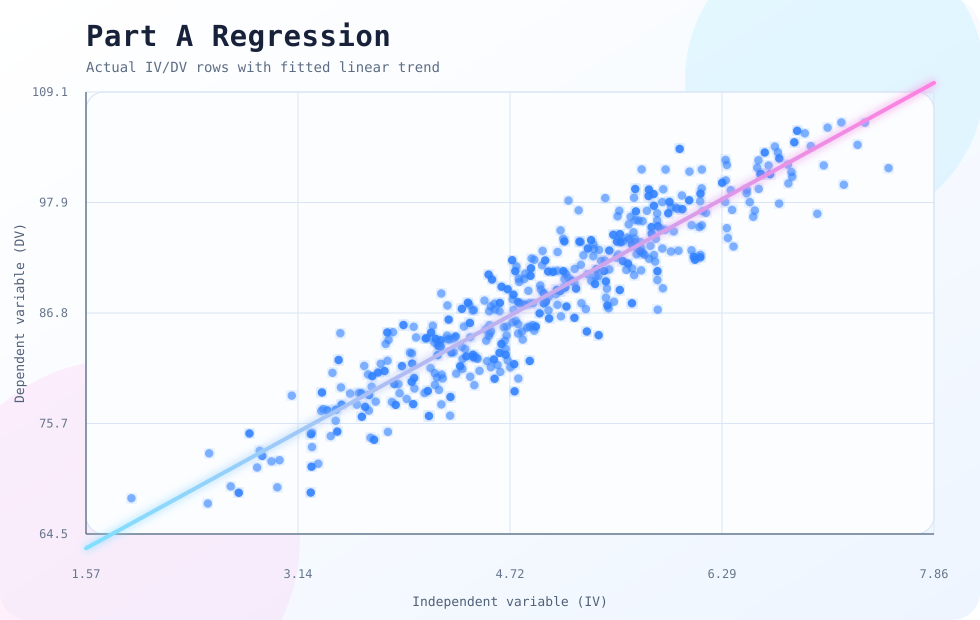

Goal
Turn two college regression case studies into a cleaner R project that is easy to run, review, and explain.
portfolio project / reproducible regression
Built reproducible R case studies for data cleaning, imputation, transformation testing, and regression modeling using synthetic educational datasets.
Turn two college regression case studies into a cleaner R project that is easy to run, review, and explain.
Organized scripts, raw data paths, missing-data handling, transformations, model outputs, and plots into a reproducible workflow.
Turned the class work into a clear project archive with scripts, outputs, and notes that make the modeling steps easy to follow.
build notes
visual notes
These graphs were generated from the uploaded regression data files in the project folder.
